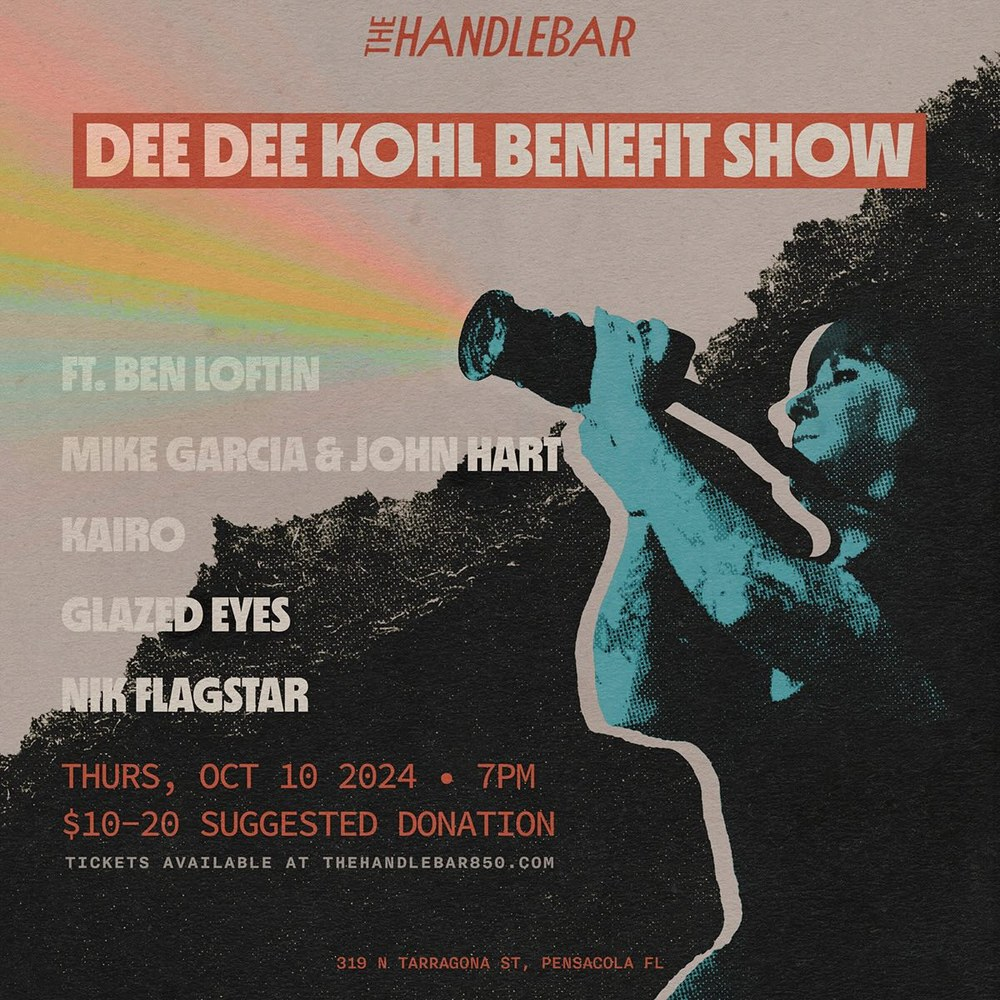

THU OCT 10from the archive
Ben Loftin, Mike Garcia, John Hart, Kairo, Glazed Eyes
The Handlebar · 319 N Tarragona St, Pensacola, FL
★ benefit show
7pm
$10-20 donation
Next week we’re throwing a last minute benefit show for the woman who does everything and asks for nothing in return, the great @deedeekohl! Her camera broke during a show doing what she loves a couple weeks ago and we wanted to come together to try & pay off her new one so she can continue making all our bands and shows look cool as can be 😎 If Dee Dee has ever taken a photo of you and your band, you’ll be here right?! Right ✍️📕